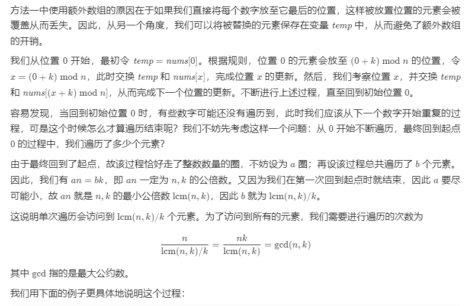
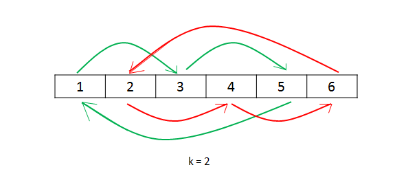
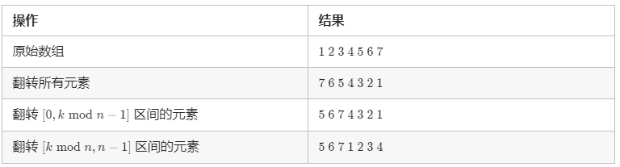
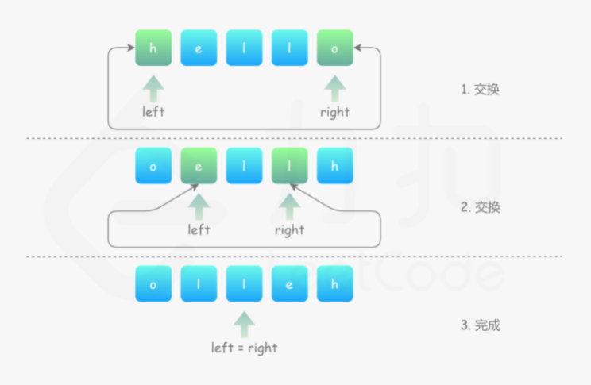
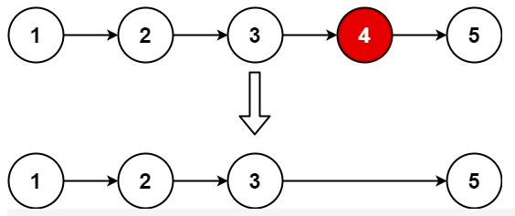
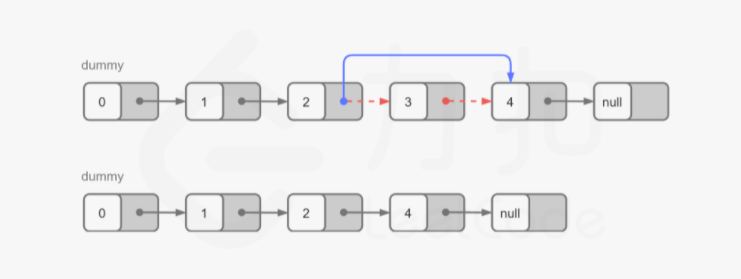
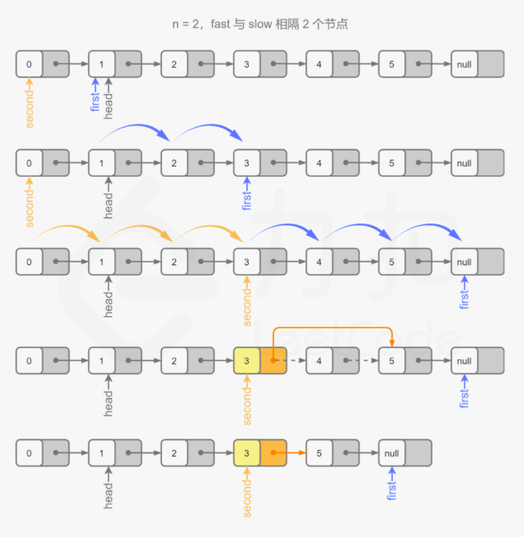

什么是双指针（对撞指针、快慢指针） 双指针 ，指的是在遍历对象的过程中，不是普通的使用单个指针进行访问，而是使用两个相同方向（快慢指针 ）或者相反方向（对撞指针 ）的指针进行扫描，从而达到相应的目的。
换言之，双指针法充分使用了数组有序这一特征，从而在某些情况下能够简化一些运算。
给你一个按 非递减顺序 排序的整数数组 nums，返回 每个数字的平方 组成的新数组，要求也按 非递减顺序 排序。
1 2 3 4 5 6 7 8 9 10 11 12 13 14 示例 1： 输入：nums = [-4,-1,0,3,10] 输出：[0,1,9,16,100] 解释：平方后，数组变为 [16,1,0,9,100] 排序后，数组变为 [0,1,9,16,100] 示例 2： 输入：nums = [-7,-3,2,3,11] 输出：[4,9,9,49,121] 提示： 1 <= nums.length <= 104 -104 <= nums[i] <= 104 nums 已按 非递减顺序 排序
方法一：直接排序 思路与算法
最简单的方法就是将数组 nums 中的数平方后直接排序。
1 2 3 4 5 6 7 8 9 10 11 class Solution public int [] sortedSquares(int [] nums) { int [] ans = new int [nums.length]; for (int i = 0 ; i< nums.length; i++) { ans[i] = nums[i] * nums[i]; } Arrays.sort(ans); return ans; } }
复杂度分析
时间复杂度：O(nlogn)，其中n 是数组 nums 的长度。
空间复杂度：O(logn)。除了存储答案的数组以外，我们需要O(logn) 的栈空间进行排序。
方法二：双指针 思路与算法
方法一没有利用「数组 nums已经按照升序排序」这个条件。显然，如果数组 nums中的所有数都是非负数，那么将每个数平方后，数组仍然保持升序；如果数组 nums中的所有数都是负数，那么将每个数平方后，数组会保持降序。
这样一来，如果我们能够找到数组 nums中负数与非负数的分界线，那么就可以用类似「归并排序」的方法了。具体地，我们设 neg 为数组 nums中负数与非负数的分界线，也就是说，nums[0] 到 nums[neg] 均为负数，而nums[neg+1] 到 nums[n−1] 均为非负数。当我们将数组 nums中的数平方后，那么nums[0] 到 nums[neg] 单调递减，nums[neg+1] 到 nums[n−1] 单调递增。
由于我们得到了两个已经有序的子数组，因此就可以使用归并的方法进行排序了。具体地，使用两个指针分别指向位置 neg 和 neg+1，每次比较两个指针对应的数，选择较小的那个放入答案并移动指针。当某一指针移至边界时，将另一指针还未遍历到的数依次放入答案。
1 2 3 4 5 6 7 8 9 10 11 12 13 14 15 16 17 18 19 20 21 22 23 24 25 26 27 28 29 30 31 32 33 34 35 36 37 38 39 class Solution public int [] sortedSquares2(int [] nums) { int boundaries = -1 ; int numsLength = nums.length; for (int i = 0 ; i < numsLength; i++) { if (nums[i] < 0 ) { boundaries = i; } else { break ; } } int [] ans = new int [numsLength]; int index = 0 , i = boundaries, j = boundaries + 1 ; while (i>= 0 || j<numsLength) { if (i < 0 ) { ans[index] = nums[j] * nums[j]; j++; } else if (j == numsLength) { ans[index] = nums[i] * nums[i]; i--; } else if (nums[i] * nums[i] < nums[j] * nums[j]){ ans[index] = nums[i] * nums[i]; i--; } else { ans[index] = nums[j] * nums[j]; j++; } index++; } return ans; } }
复杂度分析
时间复杂度：O(n)，其中 n 是数组nums 的长度。
空间复杂度：O(1)。除了存储答案的数组以外，我们只需要维护常量空间。
方法三：双指针 思路与算法
同样地，我们可以使用两个指针分别指向位置 0 和 n−1，每次比较两个指针对应的数，选择较大的那个逆序放入答案并移动指针。这种方法无需处理某一指针移动至边界的情况，读者可以仔细思考其精髓所在。
1 2 3 4 5 6 7 8 9 10 11 12 13 14 15 16 17 18 19 20 21 class Solution public int [] sortedSquares3(int [] nums) { int numsLength = nums.length; int [] ans = new int [numsLength]; for (int i = 0 , j = numsLength-1 , pos = numsLength-1 ; i <= j;) { if (nums[i] * nums[i] > nums[j] * nums[j]) { ans[pos] = nums[i] * nums[i]; i++; } else { ans[pos] = nums[j] * nums[j]; j--; } pos--; } return ans; } }
复杂度分析
时间复杂度：O(n)，其中 n 是数组nums 的长度。
空间复杂度：O(1)。除了存储答案的数组以外，我们只需要维护常量空间。
给定一个数组，将数组中的元素向右移动 k 个位置，其中 k 是非负数。
进阶：
尽可能想出更多的解决方案，至少有三种不同的方法可以解决这个问题。
1 2 3 4 5 6 7 8 9 10 11 12 13 14 15 16 17 18 19 示例 1: 输入: nums = [1,2,3,4,5,6,7], k = 3 输出: [5,6,7,1,2,3,4] 解释: 向右旋转 1 步: [7,1,2,3,4,5,6] 向右旋转 2 步: [6,7,1,2,3,4,5] 向右旋转 3 步: [5,6,7,1,2,3,4] 示例 2: 输入：nums = [-1,-100,3,99], k = 2 输出：[3,99,-1,-100] 解释: 向右旋转 1 步: [99,-1,-100,3] 向右旋转 2 步: [3,99,-1,-100] 提示：a 1 <= nums.length <= 2 * 104 -231 <= nums[i] <= 231 - 1 0 <= k <= 105
方法一：使用额外的数组 我们可以使用额外的数组来将每个元素放至正确的位置。用 n 表示数组的长度，我们遍历原数组，将原数组下标为 i 的元素放至新数组下标为 (i+k)mod n 的位置，最后将新数组拷贝至原数组即可。
1 2 3 4 5 6 7 8 9 10 11 12 13 class Solution public void rotate (int [] nums, int k) System.out.println(Arrays.toString(nums)); int n = nums.length; int [] ans = new int [n]; for (int i = 0 ; i < n; i++) { ans[(i + k) % n] = nums[i]; } System.arraycopy(ans, 0 , nums, 0 , n); System.out.println(Arrays.toString(ans)); } }
复杂度分析
时间复杂度： O(n)，其中 n 为数组的长度。
空间复杂度： O(n)。
方法二：环状替换 
1 2 nums = [1 , 2 , 3 , 4 , 5 , 6 ]k = 2

如果读者对上面的数学推导的理解有一定困难，也可以使用另外一种方式完成代码：使用单独的变量count 跟踪当前已经访问的元素数量，当 count=n 时，结束遍历过程。
1 2 3 4 5 6 7 8 9 10 11 12 13 14 15 16 17 18 19 20 21 22 23 24 25 26 27 28 class Solution public void rotate1 (int [] nums, int k) int n = nums.length; k = k % n; int count = gcd(k, n); for (int start = 0 ; start < count; start++) { int current = start; int prev = nums[start]; do { int next = (current + k) % n; int temp = nums[next]; nums[next] = prev; prev = temp; current = next; } while (start != current); } System.out.println(Arrays.toString(nums)); } public int gcd (int x, int y) return y > 0 ? gcd(y, x % y) : x; } }
复杂度分析
时间复杂度：O(n)，其中 n 为数组的长度。每个元素只会被遍历一次。
空间复杂度：O(1)。我们只需常数空间存放若干变量。
方法三：数组翻转 该方法基于如下的事实：当我们将数组的元素向右移动 k 次后，尾部 k mod n 个元素会移动至数组头部，其余元素向后移动 k mod n 个位置。
该方法为数组的翻转：我们可以先将所有元素翻转，这样尾部的 k mod n 个元素就被移至数组头部，然后我们再翻转[0, k mod n −1] 区间的元素和 [k mod n,n−1] 区间的元素即能得到最后的答案。
我们以 n=7，k=3 为例进行如下展示：

1 2 3 4 5 6 7 8 9 10 11 12 13 14 15 16 17 18 19 20 21 22 23 class Solution public void rotate2 (int [] nums, int k) k %= nums.length; reverse(nums, 0 , nums.length-1 ); reverse(nums, 0 , k-1 ); reverse(nums, k, nums.length -1 ); System.out.println(Arrays.toString(nums)); } public void reverse (int [] nums, int start, int end) while (start < end) { int tem = nums[start]; nums[start] = nums[end]; nums[end] = tem; start++; end--; } } }
复杂度分析
时间复杂度：O(n)，其中 n 为数组的长度。每个元素被翻转两次，一共 n 个元素，因此总时间复杂度为 O(2n)=O(n)。
空间复杂度：O(1)。
给定一个数组 nums，编写一个函数将所有 0 移动到数组的末尾，同时保持非零元素的相对顺序。
示例:
1 2 输入: [0,1,0,3,12] 输出: [1,3,12,0,0]
说明 :
必须在原数组上操作，不能拷贝额外的数组。
尽量减少操作次数。
方法：双指针 思路及解法 使用双指针，左指针指向当前已经处理好的序列的尾部，右指针指向待处理序列的头部。
右指针不断向右移动，每次右指针指向非零数，则将左右指针对应的数交换，同时左指针右移。
注意到以下性质：
左指针左边均为非零数；
右指针左边直到左指针处均为零。
因此每次交换，都是将左指针的零与右指针的非零数交换，且非零数的相对顺序并未改变。
代码 1 2 3 4 5 6 7 8 9 10 11 12 13 14 15 class Solution public void moveZeroes (int [] nums) int n = nums.length, left = 0 , right = 0 ; while (right < n) { if (nums[right] != 0 ) { int temp = nums[left]; nums[left] = nums[right]; nums[right] = temp; left++; } right++; } System.out.println(Arrays.toString(nums)); } }
复杂度分析
时间复杂度：O(n)，其中 n为序列长度。每个位置至多被遍历两次。
空间复杂度：O(1)。只需要常数的空间存放若干变量。
给定一个已按照 升序排列 的整数数组 numbers ，请你从数组中找出两个数满足相加之和等于目标数 target 。
函数应该以长度为 2 的整数数组的形式返回这两个数的下标值。numbers 的下标 从 1 开始计数 ，所以答案数组应当满足 1 <= answer[0] < answer[1] <= numbers.length。
你可以假设每个输入只对应唯一的答案，而且你不可以重复使用相同的元素。
1 2 3 4 5 6 7 8 9 10 11 12 示例 1： 输入：numbers = [2,7,11,15], target = 9 输出：[1,2] 解释：2 与 7 之和等于目标数 9 。因此 index1 = 1, index2 = 2 。 示例 2： 输入：numbers = [2,3,4], target = 6 输出：[1,3] 示例 3： 输入：numbers = [-1,0], target = -1 输出：[1,2]
方法一:双循环 代码
1 2 3 4 5 6 7 8 9 10 11 12 13 14 class Solution public int [] twoSum(int [] numbers, int target) { int n = numbers.length; for (int i = 0 ; i < n; i++) { for (int j = 0 ; j < n; j++) { if (i == j) continue ; if (numbers[i] + numbers[j] == target) return new int []{i+1 , j+1 }; } } return new int []{}; } }
方法二：二分查找 在数组中找到两个数，使得它们的和等于目标值，可以首先固定第一个数，然后寻找第二个数，第二个数等于目标值减去第一个数的差。利用数组的有序性质，可以通过二分查找的方法寻找第二个数。为了避免重复寻找，在寻找第二个数时，只在第一个数的右侧寻找。
1 2 3 4 5 6 7 8 9 10 11 12 13 14 15 16 17 18 19 20 21 22 23 class Solution public int [] twoSum1(int [] numbers, int target) { int n = numbers.length; for (int i = 0 ; i < n; i++) { int find = target - numbers[i]; int mid, left = i + 1 , right = n - 1 ; while (left <= right) { mid = left + (right - left) / 2 ; if (find == numbers[mid]) { return new int []{i + 1 , mid + 1 }; } else if (numbers[mid] < find) { left = mid + 1 ; } else { right = mid - 1 ; } } } return new int []{-1 , -1 }; } }
复杂度分析
时间复杂度：O(nlogn)，其中 n 是数组的长度。需要遍历数组一次确定第一个数，时间复杂度是 O(n)，寻找第二个数使用二分查找，时间复杂度是O(logn)，因此总时间复杂度是 O(nlogn)。
空间复杂度：O(1)。
方法二：双指针 初始时两个指针分别指向第一个元素位置和最后一个元素的位置。每次计算两个指针指向的两个元素之和，并和目标值比较。如果两个元素之和等于目标值，则发现了唯一解。如果两个元素之和小于目标值，则将左侧指针右移一位。如果两个元素之和大于目标值，则将右侧指针左移一位。移动指针之后，重复上述操作，直到找到答案。
使用双指针的实质是缩小查找范围。那么会不会把可能的解过滤掉？答案是不会。假设 numbers[i]+numbers[j]=target 是唯一解，其中 0≤i<j≤numbers.length−1。初始时两个指针分别指向下标 00 和下标 numbers.length−1，左指针指向的下标小于或等于 i，右指针指向的下标大于或等于 j。除非初始时左指针和右指针已经位于下标 i 和 j，否则一定是左指针先到达下标 ii 的位置或者右指针先到达下标 j 的位置。
如果左指针先到达下标 ii 的位置，此时右指针还在下标 j 的右侧，sum>target，因此一定是右指针左移，左指针不可能移到 i 的右侧。
如果右指针先到达下标 j 的位置，此时左指针还在下标 i 的左侧，sum<target，因此一定是左指针右移，右指针不可能移到 j 的左侧。
由此可见，在整个移动过程中，左指针不可能移到 ii 的右侧，右指针不可能移到 j 的左侧，因此不会把可能的解过滤掉。由于题目确保有唯一的答案，因此使用双指针一定可以找到答案。
代码
1 2 3 4 5 6 7 8 9 10 11 12 13 14 15 16 17 18 class Solution public int [] twoSum2(int [] numbers, int target) { int left = 0 , right = numbers.length - 1 ; while (left < right) { int find = numbers[left] + numbers[right]; if (find == target) { return new int []{left+1 , right+1 }; } else if (find < target){ left++; } else { right--; } } return new int []{-1 , -1 }; } }
复杂度分析
时间复杂度：O(n)，其中 n 是数组的长度。两个指针移动的总次数最多为 n次。
空间复杂度：O(1)。
编写一个函数，其作用是将输入的字符串反转过来。输入字符串以字符数组 char[] 的形式给出。
不要给另外的数组分配额外的空间，你必须原地修改输入数组、使用 O(1) 的额外空间解决这一问题。
你可以假设数组中的所有字符都是 ASCII 码表中的可打印字符。
1 2 3 4 5 6 7 示例 1： 输入：["h","e","l","l","o"] 输出：["o","l","l","e","h"] 示例 2： 输入：["H","a","n","n","a","h"] 输出：["h","a","n","n","a","H"]
方法：双指针 思路与算法 对于长度为 N 的待被反转的字符数组，我们可以观察反转前后下标的变化，假设反转前字符数组为 s[0] s[1] s[2] ... s[N - 1]，那么反转后字符数组为 s[N - 1] s[N - 2] ... s[0]。比较反转前后下标变化很容易得出 s[i] 的字符与 s[N - 1 - i] 的字符发生了交换的规律，因此我们可以得出如下双指针的解法：
将 left 指向字符数组首元素，right 指向字符数组尾元素。
当 left < right：
交换 s[left] 和 s[right]；
left 指针右移一位，即 left = left + 1；
right 指针左移一位，即 right = right - 1。
当 left >= right，反转结束，返回字符数组即可。

代码 1 2 3 4 5 6 7 8 9 10 11 12 13 14 15 16 17 18 19 20 21 22 23 24 class Solution public void reverseString (char [] s) int left = 0 , right = s.length-1 ; while (left <= right){ char tmp = s[left]; s[left] = s[right]; s[right] = tmp; left++; right--; } } } class Solution public void reverseString (char [] s) int n = s.length; for (int left = 0 , right = n - 1 ; left < right; ++left, --right) { char tmp = s[left]; s[left] = s[right]; s[right] = tmp; } } }
复杂度分析
时间复杂度：O(N)，其中 N 为字符数组的长度。一共执行了 N/2次的交换。
空间复杂度：O(1)。只使用了常数空间来存放若干变量。
给定一个字符串，你需要反转字符串中每个单词的字符顺序，同时仍保留空格和单词的初始顺序。
示例：
1 2 输入："Let's take LeetCode contest" 输出："s'teL ekat edoCteeL tsetnoc"
方法一：自解 1 2 3 4 5 6 7 8 9 10 11 12 13 14 15 16 17 18 19 20 21 22 23 24 25 26 27 28 class Solution public String reverseWords (String s) String[] s1 = s.split(" " ); String result = "" ; for (int i = 0 ; i < s1.length; i++) { char [] chars = s1[i].toCharArray(); String s2 = reverseString1(chars); if (i != s1.length-1 ) { result += s2 + " " ; } else { result += s2; } } return result; } public static String reverseString1 (char [] s) int left = 0 , right = s.length-1 ; while (left <= right){ char tmp = s[left]; s[left] = s[right]; s[right] = tmp; left++; right--; } return String.valueOf(s); } }
方法二：使用额外空间 思路与算法
开辟一个新字符串。然后从头到尾遍历原字符串，直到找到空格为止，此时找到了一个单词，并能得到单词的起止位置。随后，根据单词的起止位置，可以将该单词逆序放到新字符串当中。如此循环多次，直到遍历完原字符串，就能得到翻转后的结果。
1 2 3 4 5 6 7 8 9 10 11 12 13 14 15 16 17 18 19 20 21 22 23 24 class Solution public String reverseWords (String s) StringBuffer ret = new StringBuffer(); int length = s.length(); int i = 0 ; while (i < length) { int start = i; while (i < length && s.charAt(i) != ' ' ) { i++; } for (int p = start; p < i; p++) { ret.append(s.charAt(start + i - 1 - p)); } while (i < length && s.charAt(i) == ' ' ) { i++; ret.append(' ' ); } } return ret.toString(); } }
复杂度分析
时间复杂度：O(N)，其中 N 为字符串的长度。原字符串中的每个字符都会在 O(1) 的时间内放入新字符串中。
空间复杂度：O(N)。我们开辟了与原字符串等大的空间。
方法三：原地解法 思路与算法
此题也可以直接在原字符串上进行操作，避免额外的空间开销。当找到一个单词的时候，我们交换字符串第一个字符与倒数第一个字符，随后交换第二个字符与倒数第二个字符……如此反复，就可以在原空间上翻转单词。
需要注意的是，原地解法在某些语言（比如 Java，JavaScript）中不适用，因为在这些语言中 String 类型是一个不可变的类型。
1 2 3 4 5 6 7 8 9 10 11 12 13 14 15 16 17 18 19 20 21 22 23 24 class Solution {public : string reverseWords (string s) int length = s.length(); int i = 0 ; while (i < length) { int start = i; while (i < length && s[i] != ' ' ) { i++; } int left = start, right = i - 1 ; while (left < right) { swap(s[left], s[right]); left++; right--; } while (i < length && s[i] == ' ' ) { i++; } } return s; } };
复杂度分析
时间复杂度：O(N)。字符串中的每个字符要么在 O(1) 的时间内被交换到相应的位置，要么因为是空格而保持不动。
空间复杂度：O(1)。因为不需要开辟额外的数组。
给定一个头结点为 head 的非空单链表，返回链表的中间结点。
如果有两个中间结点，则返回第二个中间结点。
1 2 3 4 5 6 7 8 9 10 11 12 13 14 示例 1： 输入：[1,2,3,4,5] 输出：此列表中的结点 3 (序列化形式：[3,4,5]) 返回的结点值为 3 。 (测评系统对该结点序列化表述是 [3,4,5])。 注意，我们返回了一个 ListNode 类型的对象 ans，这样： ans.val = 3 , ans.next.val = 4 , ans.next.next.val = 5 , 以及 ans.next.next.next = NULL.示例 2： 输入：[1,2,3,4,5,6] 输出：此列表中的结点 4 (序列化形式：[4,5,6]) 由于该列表有两个中间结点，值分别为 3 和 4，我们返回第二个结点。 提示： 给定链表的结点数介于 1 和 100 之间。
方法一：数组 思路和算法
链表的缺点在于不能通过下标访问对应的元素。因此我们可以考虑对链表进行遍历，同时将遍历到的元素依次放入数组 A中。如果我们遍历到了 N 个元素，那么链表以及数组的长度也为 N，对应的中间节点即为 A[N/2]。
1 2 3 4 5 6 7 8 9 10 11 12 public class MiddleNode public ListNode middleNode (ListNode head) ListNode[] listNode = new ListNode[100 ]; int t = 0 ; while (head != null ) { listNode[t++] = head; head = head.next; } return listNode[t/2 ]; } }
复杂度分析
时间复杂度：O(N)，其中 N 是给定链表中的结点数目。
空间复杂度：O(N)，即数组 A 用去的空间。
方法二：单指针法 我们可以对方法一进行空间优化，省去数组 A。
我们可以对链表进行两次遍历。第一次遍历时，我们统计链表中的元素个数 N；第二次遍历时，我们遍历到第 N/2 个元素（链表的首节点为第 0 个元素）时，将该元素返回即可。
1 2 3 4 5 6 7 8 9 10 11 12 13 14 15 16 17 18 public class MiddleNode public ListNode middleNode1 (ListNode head) int n = 0 ; ListNode cur = head; while (cur != null ) { ++n; cur = cur.next; } int k = 0 ; cur = head; while (k < n / 2 ) { ++k; cur = cur.next; } return cur; } }
复杂度分析
时间复杂度：O(N)，其中 N 是给定链表的结点数目。
空间复杂度：O(1)，只需要常数空间存放变量和指针。
方法三：快慢指针法 思路和算法
我们可以继续优化方法二，用两个指针 slow 与 fast 一起遍历链表。slow 一次走一步，fast 一次走两步。那么当 fast 到达链表的末尾时，slow 必然位于中间。
1 2 3 4 5 6 7 8 9 10 11 public class MiddleNode public ListNode middleNode2 (ListNode head) ListNode fast = head, slow = head; while (fast != null && fast.next != null ){ fast = fast.next.next; slow = slow.next; } return slow; } }
复杂度分析
时间复杂度：O(N)，其中 N 是给定链表的结点数目。
空间复杂度：O(1)，只需要常数空间存放 slow 和 fast 两个指针。
给你一个链表，删除链表的倒数第 n 个结点，并且返回链表的头结点。
进阶： 你能尝试使用一趟扫描实现吗？
示例 1：

输入：head = [1,2,3,4,5], n = 2
示例 2：
输入：head = [1], n = 1
示例 3：
输入：head = [1,2], n = 1
提示：
链表中结点的数目为 sz
1 <= sz <= 300 <= Node.val <= 1001 <= n <= sz
前言next 指针指向链表的头节点。这样一来，我们就不需要对头节点进行特殊的判断了。
例如，在本题中，如果我们要删除节点 y，我们需要知道节点 y 的前驱节点 x，并将 x 的指针指向 y 的后继节点。但由于头节点不存在前驱节点，因此我们需要在删除头节点时进行特殊判断。但如果我们添加了哑节点，那么头节点的前驱节点就是哑节点本身，此时我们就只需要考虑通用的情况即可。
特别地，在某些语言中，由于需要自行对内存进行管理。因此在实际的面试中，对于「是否需要释放被删除节点对应的空间」这一问题，我们需要和面试官进行积极的沟通以达成一致。下面的代码中默认不释放空间。
方法一：计算链表长度 思路与算法
一种容易想到的方法是，我们首先从头节点开始对链表进行一次遍历，得到链表的长度 L。随后我们再从头节点开始对链表进行一次遍历，当遍历到第L−n+1 个节点时，它就是我们需要删除的节点。
为了与题目中的 n 保持一致，节点的编号从 1 开始，头节点为编号 1 的节点。
为了方便删除操作，我们可以从哑节点开始遍历 L-n+1 个节点。当遍历到第 L-n+1 个节点时，它的下一个节点就是我们需要删除的节点，这样我们只需要修改一次指针，就能完成删除操作。

代码
1 2 3 4 5 6 7 8 9 10 11 12 13 14 15 16 17 18 19 20 21 22 23 24 class Solution public ListNode removeNthFromEnd (ListNode head, int n) ListNode dummy = new ListNode(0 , head); int length = getLength(head); ListNode cur = dummy; for (int i = 1 ; i < length - n + 1 ; ++i) { cur = cur.next; } cur.next = cur.next.next; ListNode ans = dummy.next; return ans; } public int getLength (ListNode head) int length = 0 ; while (head != null ) { ++length; head = head.next; } return length; } }
复杂度分析
时间复杂度：O(L)，其中 L 是链表的长度。
空间复杂度：O(1)。
方法二：栈 思路与算法
我们也可以在遍历链表的同时将所有节点依次入栈。根据栈「先进后出」的原则，我们弹出栈的第 n 个节点就是需要删除的节点，并且目前栈顶的节点就是待删除节点的前驱节点。这样一来，删除操作就变得十分方便了。
1 2 3 4 5 6 7 8 9 10 11 12 13 14 15 16 17 18 19 20 21 22 23 24 class Solution public ListNode removeNthFromEnd2 (ListNode head, int n) ListNode dummy = new ListNode(0 , head); Deque<ListNode> stack = new LinkedList<ListNode>(); ListNode cur = dummy; while (cur != null ) { stack.push(cur); cur = cur.next; } for (int i = 0 ; i < n; ++i) { stack.pop(); } ListNode prev = stack.peek(); prev.next = prev.next.next; ListNode ans = dummy.next; return ans; } }
复杂度分析
时间复杂度：O(L)，其中 L 是链表的长度。
空间复杂度：O(L)，其中 L 是链表的长度。主要为栈的开销。
方法三：双指针 思路与算法
我们也可以在不预处理出链表的长度，以及使用常数空间的前提下解决本题。
由于我们需要找到倒数第 n 个节点，因此我们可以使用两个指针 first 和second 同时对链表进行遍历，并且 first 比 second 超前 n 个节点。当 first 遍历到链表的末尾时，second 就恰好处于倒数第 n 个节点。
具体地，初始时 first 和 second 均指向头节点。我们首先使用 first 对链表进行遍历，遍历的次数为 n。此时，first 和 second 之间间隔了 n-1 个节点，即 first 比 second 超前了 n 个节点。
在这之后，我们同时使用 first 和 second 对链表进行遍历。当 first 遍历到链表的末尾（即 first 为空指针）时，second 恰好指向倒数第 n 个节点。
根据方法一和方法二，如果我们能够得到的是倒数第 n 个节点的前驱节点而不是倒数第 n 个节点的话，删除操作会更加方便。因此我们可以考虑在初始时将 second 指向哑节点，其余的操作步骤不变。这样一来，当 first 遍历到链表的末尾时，second 的下一个节点就是我们需要删除的节点。

代码
1 2 3 4 5 6 7 8 9 10 11 12 13 14 15 16 17 18 19 20 21 class Solution public ListNode removeNthFromEnd3 (ListNode head, int n) ListNode dummy = new ListNode(0 , head); ListNode first = head; ListNode second = dummy; for (int i = 0 ; i < n; ++i) { first = first.next; } while (first != null ) { first = first.next; second = second.next; } second.next = second.next.next; ListNode ans = dummy.next; return ans; } }
复杂度分析
时间复杂度：O(L)，其中 L 是链表的长度。
空间复杂度：O(1)。

Copyright 2021 sunfy.top ALL Rights Reserved